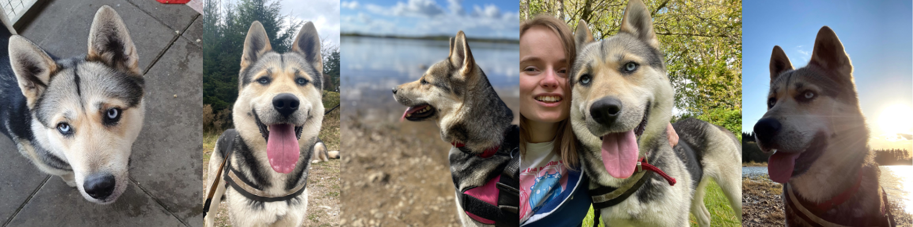
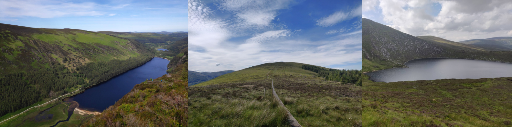
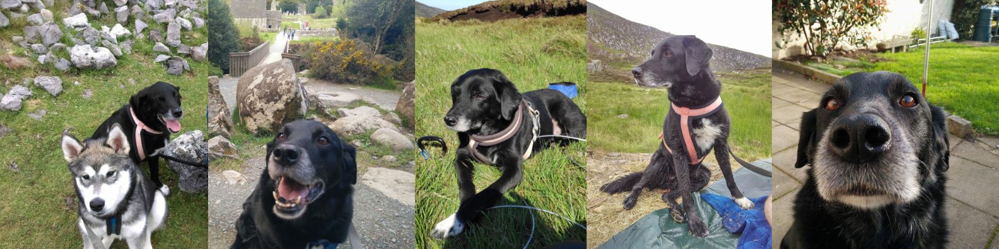

Tags
Wicklow Wolpack Blog Posts
Skadi
Our newest pack member, May 2021
Before Jinny’s health started to decrease, we started thinking of rescuing another pupper. Both DogDad and I found ourselves wanting to increase our exercise and adventures, and Zeus can only be in one place at a time while Jinny with her age at the time could do less and less.
After Jinny’s health decreased, we put all plans on hold, as we wanted to make sure our best girl had the best last few months she could! When Jinny died back in early December 2020, we as a family were completely heartbroken, and could only focus on mourning and healing as a family/wolfpack, (it also did not help that there was also still a major pandemic happening).
After several months, many discussions, and loads of crying (mostly by me!), we began looking into adopting a dog from one of the many animal shelters nearby. However, with the increased demand for dogs and other pets thanks to the may lockdowns and covid related restrictions, we found to our surprise that there were no suitable dogs available.
Although there were some dogs still in the shelters, many were not suitable as we already had Zeus and the shelter was looking for no-pet households for them or no-male dog households. In terms of our requirements, we wanted to dog that was younger than Zeus, (so less than 3 years old), would be able to run and go on family adventures with us, and ideally a malamute, husky, or a snowdog mix.
When we first seen Skadi’s picture on the animal shelter website, we both fell completely in love with her eyes, and rang immedoiately, but unfortunately there was a delay with the posting of her photo on the website and by the time we seen it she was already placed in a home. Both DogDad and I were so disheartedned, and continued to check every shelter we could think of every day in the hope that we could give a pupper in need a forever home.
About a week after being told that Skadi was already rehomed, we got a phone call saying that she had been brought back and asking if we were still interested. We donned masks and went to go meet her at the resuce kennel
We met with the staff, (socially distanced of course with masks),
Cycling across Ireland
My journey from no bike skills to cycling for a week,
Learning to Cycle
description
Jinny 2007-2020 💔
description
Losing our best girl Jinny 💔 in December 2020 was the single most difficult thing our litttle Wolfpack has been through to date. Due to the Covid-19 restrictions in Ireland, we could not travel to any of our favourite places or see family so, we had to grieve at home.
Since both DogDad and I could talk to each other, I mostly worried about Zeus. For the first few nights, my poor best boy cried every night, (Zeus and Jinny both slept in crates beside each other in our kitchen), so being suddenly alone at night time was quite a shock. It took Zeus a few days to stop crying at night time, and many weeks for our home to start to return to normal, (some days it still doesn’t feel right).
I don’t think we will ever fully heal from losing Jinny, but over the last few months it has got slightly easier. We can now remember her, her antics, as well as Jinny’s beautiful puppy eyes, and not just be sad but happy she had a good life with us.
It's taken me so long to even look at writing this post, everytime I started to think of what I should say, I just got incredibily sad.
* Update: July 2022 *I am able to think and talk about my best girl without crying, but I still miss her so very much.
title
description
Going “Vegan” for 30 days!
Our 30 Day Vegan Challenge, July 26, 2022
So back at the beginning of November 2019, myself and DogDad were talking about trying a vegan or plant-based diet for 30 days to see how we felt after watching “Game Changers” (it was the final straw that broke the camel’s back), and of course trying out vegan burgers in our new local vegan café.
At first, we talked about waiting till after our big running event on the 16th of November, and even thought we might wait until the start of the new year. However, as soon as it was on our minds we both found ourselves wanting to try it sooner rather than later, especially if it would help our performance and health. So, starting on the 2nd of November we started our 30-day vegan experiment.
First things first, it was hard, but not in the way you might think. For several months beforehand, we both had been reducing the number of animal products we were consuming as part of our effort to lose weight and become healthier alongside our new exercise routine and were practically vegetarian because of this ongoing effort. This made taking the next step to becoming “vegan” or “plant-based” super easy as our diet was already two-thirds there!
Also to keep in mind, (as I have mentioned in a previous blog post), I grew up with access to fresh organic meat and eggs among other products, so when we moved into our house in Wicklow, I wanted both myself and DogDad to buy local, fresh and organic everything. From fruit and vegetables to eggs and honey.
However, it proved to be extremely difficult, expensive, and not possible in every circumstance. This situation also fed into the decision to trial a “vegan” or “plant-based” diet for 30 days, as I did not want to purchase or consume products from battery farms, and other similar unethical products, as well as products from outside of Ireland if they can be produced here, (i.e. potatoes and other root vegetables).
During the first week there were four things that I found difficult:1. Replacing my normal honey with a vegan/plant-based sweetener
2. Checking all labels for animal products. (thank goodness things like milk and egg are written in bold as sometimes it can be difficult to read product labels!)
3. Not relying on eggs as a quick and simple breakfast/brunch
4. Finding out that the low-calorie packet soup that we had in our cupboard was not vegan, (as it contained milk powder ☹ )
These four things became much easier as the 30 day trail progressed as I fell in love with Agave syrup, (it is so much easier to use than honey in many cases as it is not as viscous as honey), I got to know several vegan/plant-based staple meals and their ingredients so I was checking less packages as most of our shopping now consisted of the raw/base ingredients, I quickly realised that I could make super fluffy vegan pancakes for breakfast of porridge with loads of trimmings which I preferred over my over poached eggs and toast, and that I didn’t need to have emergency packet soup as a low calorie/quick meal if I was eating healthy and had homemade hummus in the fridge!
The rest of the 30 day trial actually went by fairly smoothly, in fact we hadn’t really realised how long it had been until the 30th of November as we were at a family dinner party, (DogDad’s mum kindly made a vegan/plant-based option for each course for us and the vegetarians present), that we were asked some questions and realised how well we were feeling and that our trail was practically over.
We were asked things like;- How and why we were suddenly vegan/plant-based?
- How long we had left in our trail?
- Were we going to go back to our old diet?
- Did we have less energy?
- Could we eat chocolate?
- Is eating too much soya not bad for you?
- Were we getting enough protein and vitamins, etc.!?
- Was it difficult?
- Was cooking with tofu hard?
This was the first real-time we had to think about these questions outside of our discussion on trying to be vegan/plant-based for a month, and with other people. I found myself being completely honest and saying that we hadn’t decided or even talked about what will happen at the end of the trial as we have been so busy living life and enjoying the 30-day challenge.
However, as I can now answer these common queries better, so let’s break it down.
– How and why we were suddenly vegan/plant-based?We wanted to know for ourselves if it was firstly doable, healthy, fun and tasty, secondly for the environmental impact that animal agriculture has on the planet, (I personally think that just cutting out meat is not enough to reduce our environmental impact but that it is the first and biggest step in the journey), and thirdly because we both truly love animals.
– How long we had left in our trial?When we were first asked this question, it was one day, now however our trial is well over and the vegan/plant-based diet it is probably our diet and lifestyle going forward.
– Were we going to go back to our old diet?No, I will admit to some accidents and mistakes in the first two months of being vegan, but apart from accidentally eating beeswax and dairy once I cannot see us not being vegan -Plant-based.
– Did we have less energy?No, in fact, I found myself having more energy or at least feel less weighed down by the foods I am eating. After all, we did complete “Run The Line” in good enough time as a new runner and an even newer vegan/plant-based person during our 30-day challenge, and have only got fitter and healthier since.
– Could we eat chocolate? Yes!I still eat chocolate! Most of my favorite brands are vegan and more and more are releasing vegan versions. (Bournville & Oreos are my go-to right now and I have even made oreo cheescake 😋 ).
– Is eating too much soy not bad for you?The simple answer is no, but eating too much of anything is “bad” for your general health. The most common follow-up to this question is, “Doesn’t soy affect your breasts and hormones?“. I am obviously no doctor, so I won’t attempt to go through the many peer-reviewed papers and articles that explore soy effects on the human body, but I can talk about my personal experiences… I have not seen any changes, my doctor is happy with my health, I am still able to donate blood, and live life to the fullest.
– Were we getting enough protein and vitamins, etc.!?I eat a varied diet so not getting enough protein and vitamins is not a big concern. However since I am eating at a small calorie deficit in order to lose more weight at the moment and to keep us always covered vitamin and omega wise, I do take a multivitamin and an omega-3 supplement. I do believe that if you have balanced diet supplements are not necessary, but at least this way we never have to worry about it.
– Was it difficult?Yes, in many ways going vegan for 30 days was extremely difficult. However, seeing as we did it as a household, were already tracking calories and food intake, and had a desire to find out if it was possible for us to be happy as vegans, many of the roadblocks we see new vegan run into, we actually avoided. It also hugely helped that our extended family were supportive, (like DogDad’s mum making us vegan food for the family party mentioned above, and happily trying vegan versions of food we made like scones & soda bread!)
– Was cooking with tofu hard?Yes at first, but once you learn one recipe/way to cook it you’ll suddenly find yourself using it in loads of different ways! There are two types of tofu, a firm block, and a softer “dessert” tofu, both of which I now know how to use, have been using since November 2019. To make life easier we actually ended up purchasing a tofu press, (the “Tofuture” one off Amazon), which is much easier to use over using plates and heavy books to “press” the firm tofu.
[Here are two useful video about cooking with tofu]
TO COOK & USE TOFU | 5 Easy Ways by Madeleine Olivia
“3 BEST WAYS TO COOK TOFU | THE HAPPY PEAR”
Now I must point out at this stage, (at say the three-month mark), I found myself wanting to suddenly jump off the deep end and not only be vegan/plant-based but become fully zero-waste, cycle everywhere, grow most of our own food, buy eco-clothing, only eat organically and locally produced goods, make our own gin, build an A.R.K., ( a mini nature reserve more info. here), on our property, get a solar farm, rescue animals, etc., all at once!
It took me quite a long time to figure out that we couldn’t do everything straight away. We couldn’t cycle everywhere as the local greenway has not been extended yet to our area of Wicklow, the closest Zero-Waste shop was an hour drive away, we don’t have the space, expertise, or the funds to have and maintain an animal rescue, we need stuff like furniture and a new oven for our home which will have some packaging, we don’t have the time or funds to build an extensive vegetable garden to grow most of the vegetables we would need, not to mention the climate.
So what now? Well, it has been almost two years since we did our 30 Day Challenge. More and more information, (and misinformation), is being shared online and in other ways, more vegan/plant based products are available, (including two flavors of vegan Magnums and Doc Martins), and we are as happy as ever.
- DogMum.
Resources related to Veganism to consider
A short guide to Vegan informative resourses from 30 day challenges to handy recipes, January 28, 2020
So if you are considering becoming vegan or plant based, or just want to understand why someone you know decided to become vegan or plant based, the following documentaries and youtube videos are my favourite and most useful resources that I have discovered so far!
Documentaries; (all available on Netflix and other services)- Gamechangers
- Forks over knifes
- Cowspiracy
- The Yes Theory video where they try veganism for a month, but also start and finish with a doctor visit so they can see actual scientific results.
- Burger lover’s try vegan burgers,(includes a recipe).
- Madeleine Olivia’s video for fantastic tips
- The Happy Pear’s video with one of their beauitful and easy to follow recipes
- How to make your own vegan/plant based cambert.
- “Why I’m A Vegan”
- “Be a Bad Vegan”
- “A Plant-based Diet Changed My Life”
- “Obesity is a National Security Issue”
As always, I hope these are useful!
- DogMum
Being “Zero Waste”/ “Low Impact” in Dublin Airport
My experience, January 27, 2020
So, obviously travelling by plane is not “zero waste”, due to the environmental impact for airtravel etc., however I feel that one can travel as “low impact” while travelling by reducing one’s waste while in the airport and on the plane very easliy.
Now both Terminal 1 and Terminal 2 in Dublin Airport have almost identical resources that one can avail of to reduce one’s waste. These are of course the free water staions, where one can drink water and refill water bottles, the recycling and compost bins, and also the vegan/plant based food options available in the food hall area.
Terminal 1, as I was delighted to discover, has a small “Happy Pear” shop, (a famous vegan restaurnt chain in Ireland), with several breakfast and brunch options and all compostable packaging. While Terminal 2, does not have a similar all vegan option, there were options within some of the menus.
In terms of pre-airport preparations, I would recommend bringing an empty waterbottle, a bamboo cutlery travel set, a smart device with apps intalled (like audible, spotify, netflix, and duolingo, and the app of what ever airline you are travelling with), so you can reduce the amount of items you are bringing with you such as books, ipod, and tickets as well as saving space in your luggage for other items such as clothes and if you are like me running gear!
Many people who choose to live in a more “low impact” way tend not to buy new items or discuss buying items new. However, after over eight years my favouite travelling backpack, (that I bought scond-hand in a charity shop during my first year of university), fell apart, and so I decided to do some research into travel backpackks, and found the new “Osprey” backpack. I have now used it on four trips both in Ireland and abroad, and completely love it. I will say though, that I bought an expensive but good quality bag for myself because I intend to use this bag for many years to come, and not as a “fast fashion” piece.
*Useful Tip* -Also please check with your airline before travelling if you can bring cutlery in your carry on bag, (my set is bamboo and was allowed) -Always check that your waterbottle is empty before going through security, (you can fill it up afterwards!)
As always I hope this was useful!
To harness or not to harness?!
Title description, Dec 7, 2017
So, like I have mentioned in previous blog posts, we have an older dog, ( a Lab-cross who was rescued from a shelter 13 years ago), named Jinny. The reason why I am mentioning this again is that our research and investigation into the usefulness of harnesses, all started when we moved into our present house in Co. Wicklow, Ireland, with Jinny. Jinny was used to being walked off-leash at a local beach for most of her life, in my partner’s parent’s house near the sea. When we moved out to Wicklow, we firstly had no beach, and more importantly could not have Jinny off leash. This was due to the fact that we are completely surrounded by fields full of sheep, and for the most pasrt have to walk her on a semi-busy road, (when not using the local Greenway which is a short drive away). Due to this change in location, we needed to figure out what would be the best way to walk Jinny, without her pulling too much, and would be easy to later use for running. We shopped around several pet shops, we ended up buying Jinny a harness, (we got her a pink one!), to try it out. Good news, she seemed to be quite happy in her new harness. This, I think is mostly due to comfort, as before using the harness, she was being walked with the lead clipped onto her collar, and when she inevitably pulled to much, she would start to choke herself. After a while, through slowly building her up, Jinny was able to not only heel walk via voice comands only, (lead attached to a running belt for security), but was able to run up to 5km with DogDad and even attended a ParkRun event without pulling us or choking herself! Sadly, last Christmas, (2018), Jinny injured her paw, and was out of commission for a while, (she wasn’t even allowed outside on Doctors orders), however she is back on the mend, and is yet again being slowly built up to running 5ks!
When we got Zeus, we had already had a positive experence with harnesses, so we bought his first harness the same day as we got Zeus, (along with other extra supplies). Since then we have used four different harnesses, including his first blue harness that Zeus later outgrew, his secong blue harness ( a larger size of the same brand and style as his first) that Zeus chewed, his first running/hiking/adventure backpack from “Ruffwear” that we still use and love, and of course Zeus’s day to day harness, his Julius K-9 harness. Zeus having a quick nap at Loch Ouler, Co. Wicklow, (wearing his first harness) At the time we both loved the soft harness, however in terms of saftey I would not buy one again, (especially if a teething puppy is involved!), as it was far too easy for Zeus to chew through the harness. Zeus in his second harness, on the Summit of Knocknarea, Co. Sligo
In terms of the ”Ruffwear” harness/packpack, this was one if not the best purchase we have made. On every run, hike, walk and long car journey, we use it! We got the additional chest coolpack, that one wets with water before starting the activity and it keeps the dog’s chest cool. It also has two side pockets that the two water bladders that came with the harness fit into along with extra space for other items. I personally put dog poop bags, hand sanitiser, small bag of treats, a collapsible water bowl and my mobile phone into these pockets while out on longer runs! For me, the main downside to this harness, is that I find it difficult to clean, (Zeus loves all things mud and water!).
Finally, we use the Julius-K9 harness for day to day activities, such as letting Zeus outside on a long outdoor lead & turnpike so he can do his business and help me with outdoor activities like refilling our bird feeder! I really like the Julius-K9 harness . It has a large handle and ring to attach leads to, and so far has been super easy to use. However the main downsides are the lack of storage for our longer adventures!
* Update as of Thursday the 19th/12/2019 *Zeus was in his holiday kennel/ doggie day care yesterday while we attended a funeral service, and apon collecting him we were told that his Julius K-9 harness was getting a little tight due to his bulk! The owner’s of the doggie day care were shocked by how much muscle Zeus has put on in the last few month since his last stay with them. I guess we have all got more fit with our half marathon training! Due to this new development, (the harness in question was already on the highest setting!), we will be looking for a new day to day harness. If and when we get one I will do a full review.
-DogMum
Making our compost bin
Without buying anything new, and using random items, November 15, 2019
As part of cleaning and fixing up our new house, I wanted to make a compost bin. During our first few weeks post the move, we got a general waste and a recycling bin from the single company that services our area in Co. Wicklow, and organised the pick up of the bins. They would be collected on a Monday morning, every week, bar bank holidays, and unfortuneatly did not include a glass or compost bin. Therefore, I research compost bins, (we had limited funds and equipment), and found that the bins that were being sold nearby were either too small or far too expensive, and that I also had an old general waste bin, (I found it in the shed), that was not being used.
I took out the old bin, washed it, and using the eletric drill, ( I also found in the shed), drilled several holes in the base of the bin, and on the sides near the base. These holes are for air flow, so air can travel through the compost and also for insects and worms to travel up from the ground through the base holes to help compost the compost, by eating and breaking down the kitchen/food scraps.
Once the holes were drilled, I gathered my materials to start the composting. these include, a pile of leaves and twigs from the garden, a small amount of compost/soil that we bought in our local garden centre, a small bucket of horse manure (we had horses in our front field to eat down the grass, but one can use any manure or just leave it out), some water and my scraps from the kitchen (including coffee grinds, banana skins, onion peel and organic tea bags).
From the research I did before starting this small project, I knew that in order for the compost to work the best and to not give off any odour, I neded tomake sure that there is a balance beetween what everything I read referred to as “the greens and the browns”. This means, that however much food scraps one outs into their compost there should be an equal amount of garden waste like leaves and bush trimmings. This is way I had a large enough pile of leaves and trimmings at the beginning as I knew I would be putting in compost from my kitchen pretty much every day and wanted to get a head start on “the greens”.
As there I have been hearing quite a bit of talk on what can go into a standard garden compost, so thought I would also include a list.
Things that can be put into the compost;- Fruit and vegetable peel
- Raw/Uncooked fruit and vegatable scraps, (such as carrot tops)
- Coffee grinds
- Tea bags
- Garden waste like leaves, hedge trimmings, flower petals, etc.
- Wood ash, (in small amounts)
- Paper
Cut up your scraps into smaller peices so it is easier to be broken down
Mix/ stir your compost often, (I try to do it once a month depending on how much I have put into the compost)
Add a little bit of water often, (I tend to wash out my kitchen compost conainer at the outdoor tap and empty that water into the compost bin)
Set up an area in your kitchen where you can put your items for composting throughtout the day, (I am using a repurposed plastic bucket and lid that once contained Halloween sweets)
Have a goal for your compost! That way you will have a personal reason to continue to compost, (mine is to reduce our waste going into our general waste bin and also to have compost for my dream garden down the line,…. I have loads of garden plans for next summer!)
I hope this was useful!
-DogMum
Getting on the “Zero Waste” Electric-Wagon!
Why am I trying to be more "Zero Waste" and why, November 5, 2019
So, let me start with the fact that I have always cared about the environment! In recent years, as things in my life changed, I have been able to do more to decrease my carbon footprint and waste.
I started with composting at home and learning about growing fruit and vegetables, raising animals, making wine and organic farming techniques and methods from my family. However many of the things I do today started with my transition from living in rural Ireland to living in rented accommodation in Sligo City for college/university, and then those lessons and experiences were built upon through the next two stages of my life so far.
When I “moved out” first, I was on a strict budget, and had different amenities compared to living in my parent’s house, and this came with several negative and positive changes.
The negative changes I had in my first apartment, were that; I suddenly had a much smaller fridge, half of a small kitchen, (my housemate I and shared a kitchen and therefore I only had use of half of the cupboards for storage), no compost bin, no pantry filled with last year’s harvest, no dishwasher, no traditional stove, no access to the family car, and a budget of thirty euro (which did increase in later years to fifty euro) a week for food and any extras such as cinema tickets or a sneaky hot chocolate in between lectures.
In terms with the positive changes, I now for the first time ever had a recycle bin, (for both general carboard etc. and a second one for glass), I had a washer dryer combi machine in the kitchen/shared space, shops in walking distance, and had a local farmers market a short walk away from my apartment every Sunday.
While living in Sligo, I used a reusable water bottle, a reusable coffee cup, brought my own utensils and lunches to college and on field trips, recycled everything I could, tried to buy things loose, or in glass containers when possible, (and mostly due to the changes listed above), I could only buy what I needed for a week or two max, as I did not have the money or space to buy more.
Post college life in a shared house, also had similar issues. I lived with five other archaeologists, and it was a new opportunity to improve my carbon footprint. I carpooled with three other members of my house to work five days a week and used public transport to travel into the city centre to see my boyfriend, and to travel via train back to my parents’ house for weekend visits. I continued with the good habits I started in college from necessity, but now I was much more aware that it was better for the environment and cheaper, (leaving me with more money out of my pay check each month).
After living in four different houses, in three different counties, on different archaeological excavations over 8 months, work came to a standstill. It was coming into winter, and there were more archaeologists than jobs, and with a minor operation coming up, I had no choice but to move back in with my parents and younger brother full time. The plan was to stay until after my recovery, but I ended up staying till February between changing careers and the ever-increasing rent prices in Dublin!
In February, my partner and I moved into our first house together, and it would be the start of the Wicklow Wolf Pack! For the first time, in what felt like forever, I could unpack my stuff into a house rather than one cupboard in a shared kitchen and in a small box room! The house we moved into, is quite old. It was moved to it’s present location in the 1940’s, is a wooden frame, and had two small extensions over the years. We did loads to work, from small things like getting door mats, to medium things like getting some new furniture, and of course the bigger jobs like appliances, and installing internet and an alarm system.
The main things we did that helped with our environmental impact going forward were;-Installing a dishwasher, washing machine, and a dryer, (so we could reduce the amount of water we use)
-Getting the old single-glazed windows and door replaced with double-glazed windows and a nice new door
-Making a compost bin from stuff found in the shed
– Blocking up our fireplace with a reusable chimney balloon and installing electric heaters with a smart thermostat and attached smart plugs to them
-Planting two trees, (it was three, but a horse ate one!)
– Planting a small herb garden
-Reducing our food waste, by measuring and weighing our foods, and meal planning better
-Downsizing our stuff when we first moved in, i.e. donating clothes that no longer fit, or had multiples of. (I had a lot of old t-shirts from my digging days that were not being used as I had to wear black shirts to my job at the time of our move)
– Using apps and smart services to listen to music and audiobooks, (I used to buy lots of books, and now mostly listen to audio books through “Audible”)
– Getting a bird feeder to help the local wildlife
– Getting a tree surgeon to do a safety check and trim and lighten the load on some of the trees, (the wood removed from these trees, (once dry), will be moved and stored in the wood shed for use down the line if needed, and the smaller branches will be used in the garden once mulched)
– Combining errands to reduce our driving, (i.e. we go to the gym, pool, and shopping all in the same trip)
– Buying locally when possible, (we get our dog food and eggs from neighbours)
– Learning how to cycle, so I can cycle whenever possible rather than using the car
– Reducing the amount of meat purchased
Things we are improving soon (this week);- Constructing a raised bed for onions and probably garlic just outside our kitchen window
- Expanding our herb garden
– Going completely vegan for 30 days as an experiment to see if we can see the potential health benifits
Future ideas/plans to improve (in the next few years)- Electric car or an electric van -Growing more of our own vegetables and expanding our herb area -Planting more trees, (I want to plant fruit trees along one side of our driveway to help with food for bees and because I love trees!) -Using more local amenities, there is a going to be a community pool built in our local area hopefully in the next few years years, (it is being fundraised and driven by a local community group, “Community Pool for West wicklow”, at the moment). Once the pool is built, I can see myself and my partner, DogDad, using that instead of travelling to the pool we use now
- Cycling to the gym rather than carpooling
- Growing more of our own vegetables and expanding our herb area
- Planting more trees, (I want to plant fruit trees along one side of our driveway to help with food for bees and because I love trees!)
- Using more local amenities, there is a going to be a community pool built in our local area hopefully in the next few years years, (it is being fundraised and driven by a local community group, “Community Pool for West wicklow”, at the moment). Once the pool is built, I can see myself using that instead of travelling to the pool we use now
So, there you have it. The Wicklow Wolf Pack has decided to be “Zero Waste”, for many reasons, but mostly it feels like the next logical step in helping reduce our impact on the environment.
However, I do want to stress that I do not agree with the term “Zero Waste”, as it is not possible to live in our society without creating any waste! I have long hair, hair falls out, I live in the countryside and mud and dirt is often tracked indoors by both humans and dogs, and therefore I have dirt from vacuuming my house, (that is not going to look nice in a mason jar!) , and not everywhere has “zero waste” shops.
Therefore, the term I am hoping to use is “Low Impact”. My goal is to lower my personal impact, by going vegan, buying fruit and vegetables loose and not in plastic packaging, composting, reusing items, etc. etc.
Over the next few months I will be documenting, this new phase of our adventure.I will be putting up posts regarding; vegan recipes we have used, with both the calories and the protein included, travelling as “Zero Waste”’/ “Low Impact”, what shops have loose vegetables, where we could refill our water bottles, what products I will stop using, different small life hacks that we have tried and found useful, what I carry in my day to day backpack, so on and so forth.
If there is anything in particular anyone wants to know about, please let me know.
-DogMum
“He’s a Malamute not a Husky!”
A regualr struggle of having a malamute, September 12, 2019
Everytime we bring Zeus to a somewhat public place, like a popular hiking trail or to a outdoor market, one of the top three most common things that are said or asked by other people is if Zeus is a husky!
At first this would make us smile, and reply that he is actually a different dog breed altogther, called Alaskan Malamute.
However now, after over a year of this happening way too often, it has become somewhat annoying. In fact it has become annoying to the extent of us joking about getting a little sign for Zeus’s harness saying “Not a Husky!”.
Many people who do not work with dogs, or have met a “Mal” before, tend not to have heard of the breed, which leads to misinformation and due to their large size, “Mals” can be seen as scary until one realises that in fact Malamutes are actually giant cuddle bears!
Although Siberian Huskies and Alaskan Malamutes are both large snow dogs there are several keys differences. 1) Malamutes tend to be bigger in both a height and broadness. 2) Malamutes tend to have a softer nature, (they were even bred to keep women and children warm at night time). 3) Malamutes are built for endurance, where as huskies are built for speed. 4) Although Malamutes love excercise and going on hiking adventures, they tend to be couch potatoes while at home on their down time from exercise, where Huskies tend to have a higher energy drive. 5) Malamutes tend to have brown-coloured eyes, while Hukies are famous for having blue-coloured eyes! 6) Malamutes are one of the few dog breeds that have retracable claws, where as Huskies have normal dog claws!
While both breds are beautiful, the differences listed above are important to note as they could effect one’s decision on getting a Malamute or a Husky. It is also important to note that these two breeds are often mixed together and with other dog breeds to create crosses such as; a Mal/Huky, Mal/Labrador, Husky/Shepard, Mal/Shepard, Husky/Japanese Akita, Mal/Japanese Akita.
Needless to say always meet the dog in person before judging it, but do keep it’s genectics and breed in mind. We choose to get a purebred Alaskan Malaumute puppy from a reputable breeder for several reasons; 1) We wanted a puppy as our first offical dog together that we could train him from scratch. 2) We wanted a Malamute, and we were finding it difficult to find a young one that we could rescue. 3) We wanted to get the safest dog genectically speaking, as Mals can get Hip Dysplasia, and we wanted to get one whose lineage has been checked for this disease. 4) We wanted to be able to meet both parents of the puppy, (we even got to meet an uncle and two sisters as well!), to truely understand our new puppies temperment and lineage. This was especially useful to see what size the male Mals grew to and to ask all our questions about food, grooming and exercise from someone who knew exactly what they were talking about.
I hope now you have a better understanding of the differences between the breeds, and have more information to use in your future mal and husky lives!
- DodMum
Crate Training, an Experience!
Why we chose to crate train our new puppy, August 28, 2019
We bought Zeus’s crate the same day as we first got him. We stopped in a pet shop on the journey home to get a second bowl, puppy pads, etc., (we were not sure if we would be allowed to bring Zeus home the first day we met him so did not have all of the necessary supplies yet!).
We got one of the largest available crates, with the intention of having it work as Zeus’s bed at night time, a safe place/den for him during the day, and also an area in which if needed Zeus could be placed if he was overexcited at having visitors arrive at our house etc.
I will admit, crate training and toilet/house training at the same time was difficult. If he “went” in his crate there was extra stuff to clean, however, now Zeus is super happy with his crate. I placed a dark coloured blanket over the top of his crate to keep the interior of the crate cool and dark not unlike an actual den, and we have some light storage containers placed on top of Zeus’s crate in which we store all manner of dog related goods, from running leads to poopbags!
Today, Zeus is fully house trained, and spends every night in his crate, and tends to nap inside his crate from time to time when he is either extra tired than normal or trying to sleep somewhere cooler during sunny days.
At over a year using his crate, we would be lost without it. His crate does take up quite a large section of our kitchen, but besides that one complaint, it has been a wonderful addition, and has been super useful espeically considering we have brought it to other houses so Zeus had a secure and familar place to sleep.
In fact our experience with crate training Zeus has been so positive, that we actually went to a near by pet shop, (one town over), and bought a smaller version for our older dog Jinny.
This second crate is also located in the kitchen, (which is now more than a little crowded but happy!), and both dogs now sleep in the kitchen in their respective crates every night. This has a calming effect on Zeus, because he can now see his beloved sister Jinny, and stops Jinny from sneakily sleeping on our livingroom couch.
Also with Jinny’s absolute fear of storms/thurnder/fireworks/all loud noises, she now has a safe, cool and dark den she can feel safe inside when we are not home, (when we are home DogMum might let her sleep in her room but nobody has any evidence of that! 😉 ).
- DodMum
Weekend in Kerry!
Our experence on a staycation with our Malamute, August 26, 2019
So, my partner and I both love to travel both abroad and within Ireland. With this in mind, we try and travel with our dogs as much as possible, however Jinny is getting a bit too old to go adventuring on off-road trails, so depending on where we are travelling to, we either have both dogs or just Zeus.
During this summer, (back in May), Myself, DogDad and Zeus took a trip down too County Kerry on South-West coast of Ireland. The idea was to camp at the base of Ireland’s highest mountain, (Carrauntoohil), and climb it the following day and to stay the second night in a family member’s mobile home near Ventry beach.
Unlike our other past adventures, our plans did not as planned at all! With traffic and other delays, we arrived in County Kerry too late on the Friday night to camp in the camping area we found, and ended up driving to the mobile home.
Once we arrived at the mobile home site, it took us almost an hour to find the right one as it was pitch black out and DogDad hadn’t been at the mobile home in several years! Eventually we found the right one, and got inside and settled in for the remainder of the night, and tried for the first time ever to have Zeus sleep at the end of our bed. Alaskan Malamutes are large and heavy dogs at the best of times, and needless to say when I was awoken at 4 am by Zeus lying ontop of me and farting like he had a bad burrito, I was not impressed!
This is when one would like to imagine that our weekend adventure improved greatly, however it did not…… On the Saturday morning both myself and DogDad were exhausted! Between the long late-night drive and the broken night sleep, we were not the most energenic people, therefore we decided to have a day at the beach and climb Carrauntoohil the following day.
We ended up having a fantasic day together. We started our day with a morning stroll on Ventry beach, followed by coffeeand cake in a lovely pottery shop and cafe in Ventry
Then we swam in the sea, followed by another beach walk, while we waited for thw two tourist buses to leave “Páidí Ó Sé’s Pub” in Ventry.
Which is where we had a lovely lunch, including one of the best seafood chowders I have ever had! After lunch, we walked around Dingle town, before getting a takeaway pizza from a small pizza shop in Dingle to eat in the mobile home with a cheeky bottle of red wine! All in all it was alovely relaxing beach day!
In terms of the beach, Zeus absolutely loved the sand. He did a bit of digging, and of course went into the water. However we we took turns minding him, (while the other swam lenghts in the sea), Zeus became a little nervous. This was the first time this had happened, and I believe it was due to the fact that he could not reach the other person with ease.
My plan is to work on it by bringing him into water with the two of us remaining close by at all times until he is used to swimming out of his dept comfortably.
On the second day, after cleaning all of the dog hair from the mobile home, and stopping to get a light breakfast, we eventually arrived at the base of Carrauntoohil, only to discover several large “No Dogs Allowed” signs.
These were the most severe “No dogs Allowed” signs I have ever come across, and not only that, but there was no mention of the reasoning behind it! We have actually climbed multiple hills and mountains with Zeus already, and are well used to the “Scoop the Poop” and “Dogs on Leash” signs, but never expected this.
To make matters worse, we had no idea Dogs were not allowed up the mountain, even though both of us had done separte research online about climbing it, differnet routes etc. I was quite shocked and horrified to read that if one brought a dog onto the mountain it could be shot. Anyway, as one can imagine we ended up leaving area and not climbing Carrauntoohil. It would have been unfair to leave Zeus in the car on a hot day for hours while we hiked for hours so we did not!
Instead of climbing Carrauntoohil, we drove to the Killarney National Park, and went on my first ever 10k run through the beauitful grounds, and again despite our plans not going at all as planned we had a great time.
After being home for a while I decided to contacted the Co. Kerry County Council about the situation at Carrauntoohill, ( as Run and Dog Tourism is gaining more and popularity), and I am waiting on respose at the moment. Hopefully I will be able to post an update soon!
Zeus’s First Day!
Getting our first snowdog, August 21, 2019
My partner and I had been looking for an Alaskan Malamute puppy in Ireland for months, when we finally spotted an advertisement online early one morning over coffee.
We phoned the number of the breeder immediately and actually drove down to the breeder within an hour of the phone call. We had many discussions about what sort of dog we wanted to get, what age and what gender, before seeing this advertisement, however all came to a head when we arrived.
Although the breeder had two puppies, (one male and one female), only the male pup was for sale. The breeder also had an older female, (around one and a half years-old), who was returned after her owners split up suddenly! Now like I said we had decided what we wanted, and that was a female Malamute puppy that we could train ourselves and would be easier to introduce to our older rescue Labrador.
When we met with the breeder, he explained that his daughter wanted to keep the female pup, and if we were interested, we could meet both the male pup and the older female and see how we felt. At this time we did not have a secure dog pen finished as we knew if we got a puppy it would have to stay indoors for a few weeks anyway, so this greatly affected our decision process.
We had room in our hearts for both but it would not have been fair on our older Lab. to bring home both a puppy and a un-house-trained older female especially seeing as our outdoor area was not completed yet. After meeting both dogs, my partner and I left for a nearby cafe to think about our decision, over a well needed cup of coffee.
- Could we bring home a male pup?
- Could we bring home both the pup and the older girl?
- How difficult would it be to house-train an older dog?
- Are we able to fully care for and exercise three dogs?
- Would it be fair on our older Lab to bring home two dogs at the same time?
- Is our car big enough for three dogs?
- How much would we need to spend every month on dog food and Vet bills if we got both?
- When could we get the outdoor dog area finished?
We had loads to think about and to discuss, but my heart kept on thinking about how cute and playful the male pup was, how beautiful his parents were, and how much I loved his facemask!
As you can probably guess we both fell deeply in love with the male puppy and all thoughts of just having female dogs went out the window. We returned to the breeder and got the male puppy who we later named Zeus!
-DogMum.
How to Handle Overheating!
Summer time in Ireland, August 18, 2019
Although Ireland does not really get a “proper” summer, overheating especially with Malamutes, is a huge issue and constant worry!
Before getting Zeus, (our first Malamute), both myself and my partner knew we wanted to become healther and get into running. So by the time we got Zeus, hydration and staying cool were already on our minds.
We got Zeus first at the end of Spring, and that summer for the first time in several years, Ireland had a fantastically hot heat wave! It was so hot, that even without doing exercise avtivities, we were worried about our two dogs becoming overheated and possibly dehydrated.
From researching advice online, asking family friends (who work with animals), and trail and error, we came up with some great ways to keep both our new puppy, Zeus, and our older girl, Jinny, nice and cool!
Get a paddling pool, also referred to as a “Kiddie pool”. Most poeple already have one of these tucked away in the corner for their shed, but if not most stores such as; supermarkets, builder providers, garden shops and toy stores tend to stock them depending on the time of year.
We actually got a small and quite cheap one from Lidl. The reasoning behind getting an inexpensive one was the fact that puppies, like humans, explore the world with their mouths and during the heat wave Zeus was trying to chew through just about everything possible.
Ice! Yes ice! Get ice in our weekly shop or make some yourself using icetrays or moulds. Either way giving your dog ice to chew on or in their water bowl, that way they will stay cool. (Bonus tip chewing ise will help with teething pain in puppies!).
If you use dog toys like “Kongs”, after you stuff them with food, etc. freeze them, (works well if you use a peanutbutter spread to seal the “Kong”). That way they have something nice and cool to lick!
Go somewhere with water! I cannot recommend this enough. We have brough both dogs into the sea, into lakes, and into a larger pool, (we had to buy a new pool this summer due to a certain puppy chewing his old one!).
If you can’t go anywhere with a body of water use a sprinkler system in your garden, make sure you have shaded areas for your dogs use, and have plenty of water available in both the shady spots and anywhere else you dog like to chill out.
If possible exercise your dog early in the morning or in the evening, i.e. not during the sun’s peak time, so it is not as hot.
Also some brands of harnesses come with cooling packs. We got Zeus a”Ruffwear” on for hiking, running and longer walks. It was a cool pack, water bladder packs and pockets which we love using!
Now Zeus can carry his collapsible travel bowl, his two water bladder packs, poop bags and hand sanitizer, dog treats, and my phone on walks! On runs he only carries his bowl and poopbags so their is little extra weight for him to carry, however when Zeus is old enough we are going to slowly introduce running weights into his backpack so he will get the same workoput for the same distance!
Most importantly;Stop for water breaks!
Remember if you are hot your dog is hotter!
If it is much hotter out than normal try and avoid tarmac as it could burn your furry friends pads!
& Enjoy the summer!
- DogMum
Why a Blog?
August 13, 2019
In May of 2018, my partner and I brought our first puppy together home. He was not our first dog, (my partner had an older female Labrador when we moved into our first home together the February previously), however adopting an older dog is a far cry from raising a puppy together!
Although we both have grown up with dogs and puppies all of our lives, this was our first puppy as adults, and I now have a greater respect of the saying “rose coloured glasses”, as i do not recall house-training to be so difficult or long when my parents brought home puppies. This puppy was a purebred Alaskan Malamute, who we later named Zeus, after much deliberation I might add.
Even before Zeus joined our pack, my partner and I were researching information and advice regarding different dog breeds, dog friendly campsites etc., and since getting Zeus, we have learned so much, made so many mistakes, and are now much more in tuned into what it is truly like to have a Alaskan Malamute.
With this newfound knowledge we both found ourselves wanting to reach out and share our knowledge and adventures with the world and hopefully help others who are starting on their own puppy adventure!
With that said our goal is to share our experiences so far through this new blog
About Us
Some text about me in culpa qui officia deserunt mollit anim..